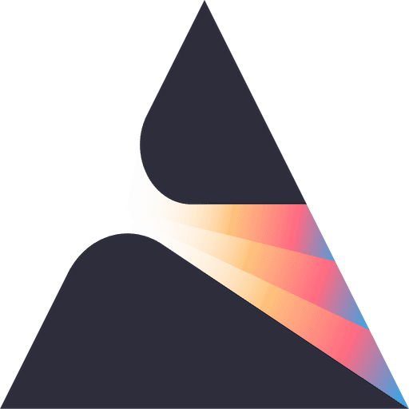

LumianReal-time tracking of how Amazon's AI shopping assistant ranks your ASINs — built on the actual Rufus endpoint, not a report API.
Rufus is changing how shoppers discover products — often before they even hit a SERP. Yet it's a complete black box for 99% of brands and agencies.
Hidden in the page subframe — invisible to top-level CDP. Found via browser-level Target.setAutoAttach auto-attach.
$ python3 ~/.claude/skills/rufus/query.py "best portable monitor for laptop" ~typing 4.2s for query: 'best portable monitor for laptop' POST -> rufus/cl/streaming OK status=200 dur=21.0s asins=11 events={'context':1,'affordance':1,'interim':2,'inference':111, 'remove':1,'feedback':1,'close':1} appended to /tmp/rufus_results.jsonl
tejesh-dev-vm (GCP, e2-small, us-central1). Human-logged-in once via VNC. CDP exposed loopback-only on :9222. systemd auto-restarts.
skill/query.py: hourly cookie keepalive (navigates Amazon tab + scrapes session), GPT-4o-mini auto-generates 8 queries from product title, fires Rufus, streams every surface back over SSE.
rufus.lumian.ai. No firewall opening, no public IP. URL persists across restarts. Dashboard auto-generates queries + shows full product grid per query, target ASIN highlighted.
✓ Auto query generation. Enter ASIN → scrape title from /dp/<ASIN> → GPT-4o-mini generates 8 plausible shopper queries.
✓ Realtime visibility check. SSE streams every product Rufus returns per query as it lands. Target ASIN highlighted in the grid.
✓ Two scores per ASIN: RVS + Answer Fit. RVS (0-100, deterministic) = Coverage + Quality. Answer Fit (0-100, LLM-judged) asks GPT-4o-mini "does this product belong in the answer set Rufus returned?" — handles multi-correct-answer queries (8 valid iPhone 17 variants) where pure rank scoring is unfair. High Fit + Low RVS = right category, losing position. Low Fit everywhere = category mismatch.
→ Next: Cloudflare Access (email-gate @lumian.ai), BigQuery sink for RVS-over-time, multi-account scaling.
rufus.lumian.ai · github.com/Lumian-AI/rufus-visibility
100 = always surfaced AND always #1. Coverage rewards showing up; Quality rewards the position when you do. A single rank-1 hit on 8 queries = 65/100, not 12 — because when Rufus does pick you, it picks you first.
Tejesh Vaish · tejesh@lumian.ai · 2026-04-29